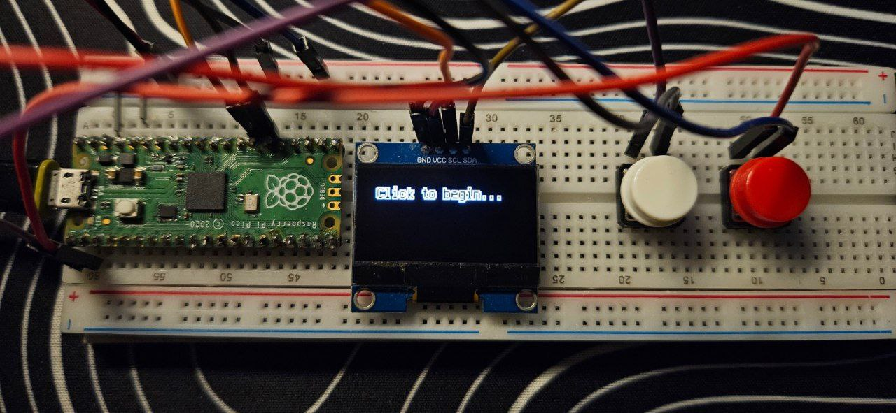

Pico Macro Deck Prototype
 This simple interface comprises of a Raspberry Pico, 2 button inputs and an Adafruit SH1106 I2C controller. This project leverages the following Repositories: * Adafruit CircuitPython Display Text * Adafruit CircuitPython Display Layout * Adafruit CircuitPython DisplayIO SH1106 * Adafruit CircuitPython HID
Pinouts
| I2C | Pico |
|---|---|
| SCL | GP21 |
| SDA | GP20 |
| GND | GND |
| VCC | 3V3(OUT) |
Functionalities
The functions are straightforward:
- Button 1 cycles between different macros configured in
code.py - Button 2 executes the selected macro
Adding new macros
A new function can be defined in code.py as such:
def hiberate():
kbd.send(Keycode.WINDOWS, Keycode.R)
time.sleep(0.1)
KeyboardLayoutUS(kbd).write('shutdown /h')
kbd.send(Keycode.ENTER)
return 'Hibernating...'
# The return value would be the text displayed after the macro has been executed
the text dictionary should just be updated accordingly to map the new function, where the key would be the title of the macro displayed on the screen.
text = {'Say Hi': hello,
'Random number from 0 to 9': rand,
'CTRL+ALT+DEL': ctrlaltdel,
'Hiberate PC': hiberate}
Macros currently in code.py
hello()
Sends keystrokes of 'hello' into your computer.
rand()
Sends a keystroke of a random integer into your computer.
ctrlaltdel()
Opens the menu.
hibernate()
Hibernates the PC.